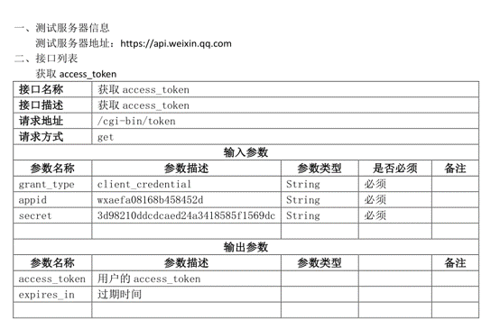
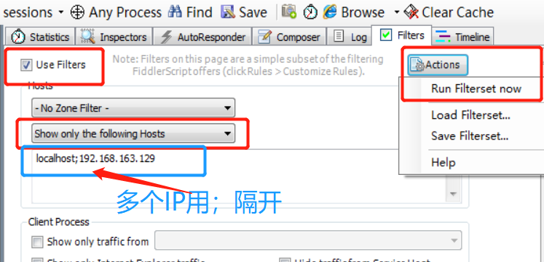
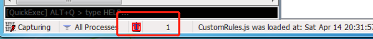
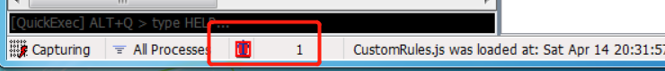
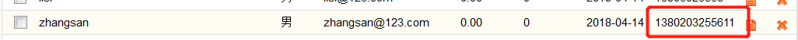
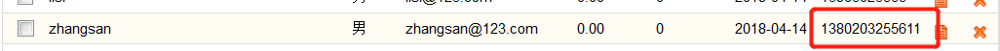

1 接口测试
接口测试是测试系统组件间接口的一种测试。接口测试主要用于检测外部系统与系统之间以及内部各个子系统之间的交互点。测试的重点是要检查数据的交换，传递和控制管理过程，以及系统间的相互逻辑依赖关系等。
简单理解
接口测试就是验证入参和对应出参信息是否满足或符合要求。 接口测试主要检查接口返回的接口数据是否正确、是否和接口文档中定义的一致。
接口测试步骤
- 获取接口地址(根据接口文档/根据抓包工具抓取)
- 分析接口请求数据(入参、处理、出参）
- 构造接口数据
- 编写测试用例
- 根据工具或者代码执行接口，比对结果即可
1.1 常见的接口
接口是指外部系统与系统之间以及内部各子系统之间的交互点。
程序内部接口
功能和功能之间、模块和模块之间
登录和发帖、登录下订单
用户界面
系统外部接口
第三方登录
QQ登录、微信登录、手机号登录
第三方支付
支付宝支付、微信支付、银行卡支付
1.2 接口的组成
接口地址可以通过接口文档获得，也可通过抓包工具获得。 以微信公众平台API接口文档为例

2 Fiddler
2.1 Fiddler的安装
基于Miscrosoft .Net Framework软件，必须先安装，一路下一步即可
Fiddler安装一路下一步即可
2.2 fiddler基本应用
2.2.1 设置过滤
Filters菜单--->勾选Use Filters
在第二个下拉框中选择Show only the following Hosts--->只显示以下地址的请求和响应数据
Actions--->Run Filterset Now立即执行

2.2.2查看请求和响应数据
判断GET请求和POST请求

【<>】符号的为GET请求
绿色向右的小箭头为POST请求
选中请求，右侧Inspectors
- 请求
在Headers和Raw中可以查看请求行和请求头部信息
在Textview或者WebForms中查看请求实体数据
- 响应
在下面的Headers/Raw中查看响应行和响应头部信
在下面的Textview中查看响应实体部分数据
2.3 fiddler修改接口请求数据
原理：越过界面验证，测试服务器端
举例：会员添加功能中手机号的正确性验证
在Fiddler中做过滤（断点） 点击【会员添加】按钮---->并填写相应参数 点击【确定】按钮 选中拦截的请求（红色的T） 选择Inspectors--->找到请求要发送的数据--->对其进行修改 重新发送接口请求：Run to Completion 关闭断点：Disabled
2.3.1 过滤数据
选择 Fiddler 菜单中 Rules--->Automatic Breakpoints--->Before Requests，设置断点，也可以使用快捷键 F11；
如果底部显示一个红色标识，证明设置断点成功了
 

修改数据并发送
 

2.4 Composer的应用
可以通过Composer模拟发送接口请求和数据，不用特意先拦截下来再去修改数据
点击右侧Composer--->Options--->Tear off 让它单独显示

点击Parsed，可以手动输入，也可把我们抓到的包拖动到Composer中，进行相应的修改；
点击【Execute】发送请求。